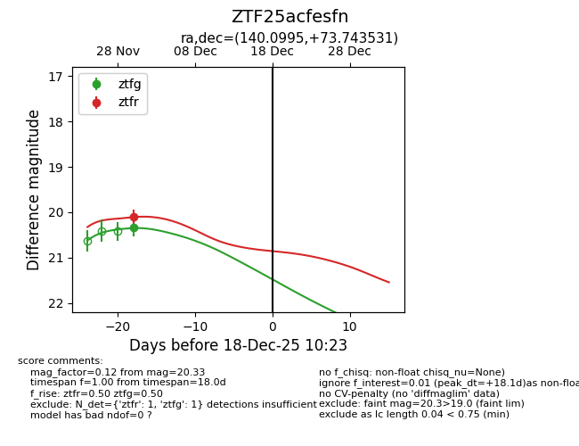
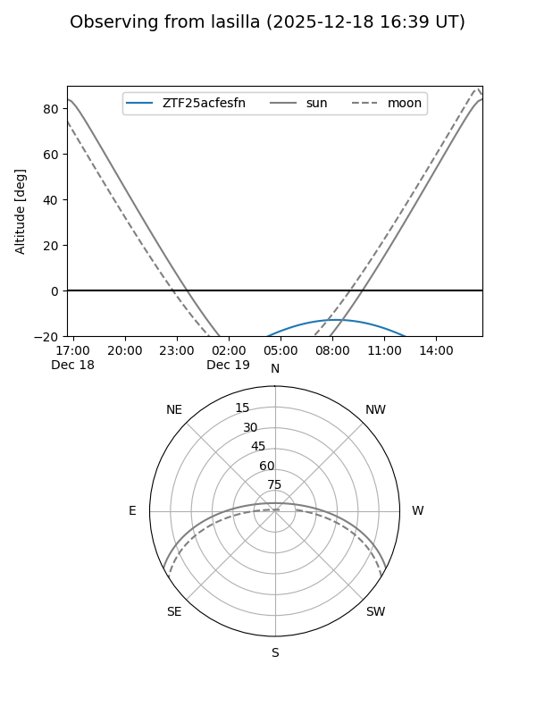
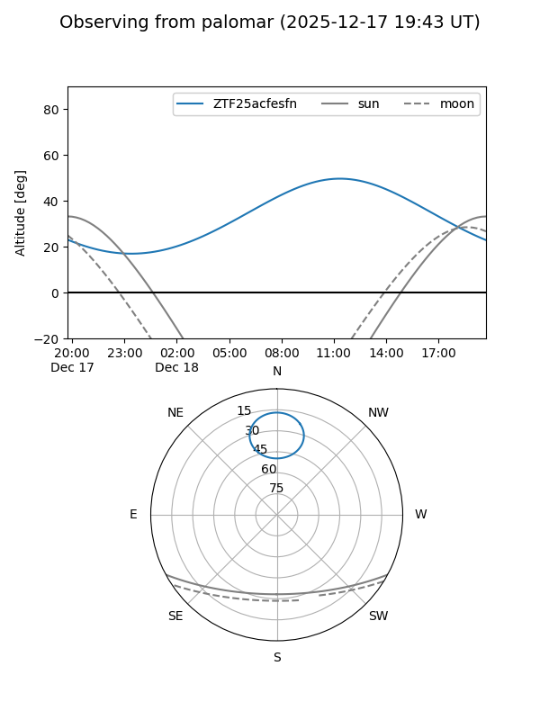

ZTF25acfesfn
Target ZTF25acfesfn at 2025-12-18 11:17
Aliases and brokers:
FINK: fink-portal.org/ZTF25acfesfn
Lasair: lasair-ztf.lsst.ac.uk/objects/ZTF25acfesfn
ALeRCE: alerce.online/object/ZTF25acfesfn
alt names
ZTF25acfesfn (ztf,fink_ztf)
Coordinates:
equatorial (ra, dec) = 140.0995,+73.74353
equatorial (HMS+DMS) = 09:20:23.89,+73:44:36.71
galactic (l, b) = (138.9328,+36.05219)
Photometry
last ztfg=20.33, ztfr=20.11
1 ztfg, 1 ztfr detections
Lightcurve

Visibility


Additional plots